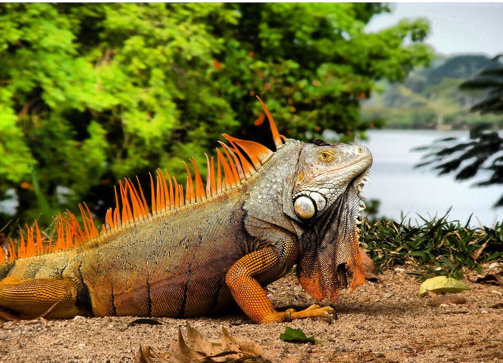

Torogoz
El Torogoz fue declarado Ave Nacional de El Salvador en octubre de 1999.
Además de su espectacular belleza las dos características que le hicieron merecedor de esta distinción son el hecho que no puede ser criado en cautiverio (símbolo de libertad) y que los dos miembros de la pareja participan en el cuidado de las crías (representando la unidad familiar).
Se encuentra la mayor parte de Centroamérica y en algunas regiones de México. En El Salvador su hábitat principal son las zonas montañosas.
Es relativamente común ver un Torogoz incluso en las zonas urbanas, en los cables del tendido eléctrico, en las bancas de los parques e incluso en los jardines de las casas, por lo que no se considera un ave en peligro de extinción
En El Salvador, es común encontrarlos en zonas como Morazán, La Unión y Chalatenango, por ser áreas montañosas y propician su reproducción.
Cusuco
El cusuco o armadillo es un animal que actualmente se encuentra en peligro de extinción en El Salvador debido a la caza indiscriminada que ha sufrido en las últimas décadas por parte de las personas.
Estos animales tienen una excelente visión nocturna, además poseen unas uñas muy afiladas en sus patas lo que les permite cavar rápidamente en la tierra, en su espalda poseen un caparazón muy duro que les sirve como protección.
Algunas personas que los cazan o los comprar para comérselos los hacen con arroz en salsa o en sopa, sin embargo son animales que merecen vivir y que forman parte de nuestra fauna, una fauna que nuestros hijos deben de conocer.
Guacalchia
Con puntualidad y magistralidad cantora, el "Chonte" me avisa que es la hora de dejar la cama y comenzar la faena del día. Él tiene uno de mis cantos favoritos por su alegre melodía.
Parte de la cotidianidad en la ciudad o el campo, es la presencia de las aves en una variedad que a veces pasamos por alto. Quizá los escuchamos sin distinguirlos, sin saber de qué especie se trata; son "músicos anónimos".
Se extiende por América Central, desde el extremo sur de México hasta Nicaragua y Costa Rica; distribuido también por Guatemala, El Salvador y Honduras. Su hábitat natural principal son las zonas de matorral tropical, aunque también se encuentra en los bosques tropicales montanos y costeros.
Sensonte
El cenzontle común o sinsonte (Mimus polyglottos) es un ave paseriforme nativa de América del Norte, América Central y el Caribe. Los ejemplares adultos son grises por la parte superior del cuerpo, con ojos de un amarillo pálido y pico negro mínimamente curvo. La cola es de color oscuro con los bordes blancos, y las patas largas y negras. Las alas muestran finas líneas blancas, y durante el vuelo dejan ver manchas, también blancas en las alas y dos franjas blancas longitudinales en la cola. Se caracterizan por imitar sonidos de otros animales.
Sus hábitats de reproducción son las zonas donde se mezclan áreas abiertas y arbustos densos, desde el sur de Canadá hasta México y Cuba. En Puerto Rico se le conoce como ruiseñor. Construyen nidos de ramas en arbustos o árboles de gran follaje, que defienden agresivamente del ataque de otras aves o animales, incluyendo a los humanos. Cuando un depredador es muy persistente, los cenzontles de territorios cercanos se reúnen mediante una llamada distintiva, y juntos atacan al agresor. Otras aves se juntan para observar cómo estos pájaros molestan al intruso. Por lo general los sinsontes son residentes permanentes; sin embargo las aves del norte emigran al sur durante la época de clima áspero. En Europa existe como una rareza extrema.
Comen principalmente insectos y bayas, y mientras lo hacen extienden frecuentemente las alas en un movimiento de dos etapas para mostrar sus manchas blancas, lo que sirve como una exhibición territorial. Se alimentan tanto en el suelo como en la vegetación; y también vuelan en picado para capturar su comida.
Garrobo

Los garrobos son heliotérmicos ( regulación de temperatura por el medio ambiente )
Solo salen de su refugio para asplearce. La temperatura corporal que prefieren es de 36-37 grados,la que mantienen por el comportamiento de termorregulación.
Tienen una garras muy fuertes que le ayuden a escarbar rápidamente.
Los refugios más comunes son abajo de piedras,raices y troncos.La madriguera ofrece refugio a muchas clases de animales como: mamíferos,serpientes,otras lagartijas y varios invertebrados.
Los garrobos son territoriales y defienden su refugio; la agresividad dentro del territorio varia de acuerdo a la estación.Los juveniles en su primer año se tornan agresivos pero no retan a los adultos .Pueden haber una asociación amistosa con la hembra y compartir refugio.
Se pueden encontrar desde los bosques secos a los bosques achaparrados y a los matorrales,los adultos son bastantes arbóreos y también terrestres,en las noches pasan en huecos de arboles y suben a forrajear en las ramas más altas.
Geckos
Todos los tipos de geckos que hay en el pais son animales nocturnos, y como muchos reptiles tienen la capacidad de desprenderse de su cola para escapar cuando se sienten amenazados. Después, esta vuelve a crecer. Además, son muy rápidos y ágiles, tienen las patas preparadas para trepar a cualquier parte. ¡Pero eso no es todo! Los geckos son los únicos lagartos con cuerdas vocales; ¿qué significa esto? Exactamente lo que estás pensando: pueden emitir sonidos.
En algunos hogares, los tienen en categoría de mascotas, mientras que en otros están proscritos como plagas.
Todos sabemos que “cantan”; sabemos que pueden caminar por superficies tan pulidas como un vidrio, y que sueltan la cola, como las lagartijas. Algunos también creen saber que son venenosos (no lo son), que transmiten enfermedades (no hay evidencias de ello) y que “orinan” una sustancia urticante (¡para nada!).
Paloma de Castilla
Palomas de Castilla. Han hecho su hábitat en las zonas urbanas.Fueron introducidas a las Islas Galápagos cerca del año 1972. En 1985 se estimaba que habían 230 palomas introducidas, 112 de las cuales estaban en San Cristóbal. Desde entonces los números han crecido.
"Especie introducida en el país, originaria de Eurasia y hoy distribuida en la mayor parte del mundo. Vive en diversos hábitats, en la naturaleza anida en su zona de origen en riscos, salientes rocosas, barrancas. Se ha adaptado perfectamente a la vida urbana, anida en construcciones humanas (cornisas, debajo de aleros, en entretechos, balcones, silos, galpones,etc.)"
Se halla en todo el pais, siempre ligada a las construcciones humanas y zonas adyacentes. En las grandes ciudades puede convertirse en una plaga por su número, deposiciones y porque son vectores de enfermedades (psitacosis entre otras) que son peligrosas para las personas. Se alimenta de granos y desechos de comida. En parques y plazas se vuelven muy mansas y tolerantes con las personas a las que persiguen en ocasiones en busca de alimento.
Presenta plumaje basal gris azulado con verde violáceo tornasolado, presenta dos bandas negras en su alas plegadas.
Chocoyo
El perico frente naranja es una especie de ave de tamaño medio de la familia de los loros (Psittacidae).
El perico frente naranja alcanza 22.5 cm de largo y 80 g de peso.
El adulto es principalmente verde, más pálido y amarillento por debajo y con un tono oliváceo en el pecho. Tiene las plumas externas de las alas de un tono azul, con revestimientos de color amarillo. La cola es puntiaguda, con la punta azul. La cabeza es distintiva, con una corona de color verde-azul, la frente naranja, y los ojos de color ámbar, con el iris amarillo y blanco. Las aves jóvenes son similares a los adultos, pero con mucho menos color naranja en la frente.
Se le encuentra en zonas áridas, bosques semihúmedos y áreas semiabiertas, así como en montañas y lugares cercanos a las costas del océano Pacífico, desde Sinaloa, en el oeste de México, hasta el oeste de Costa Rica. En El Salvador aun se pueden observar grupos.